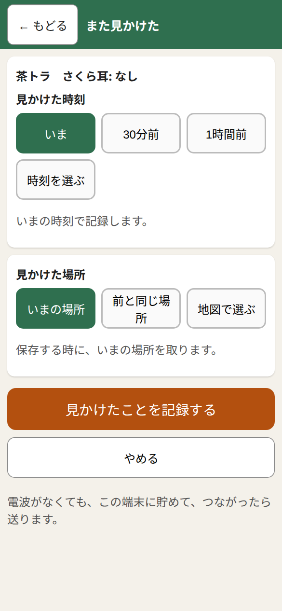

自分のスマホで猫の記録をつける人へ
はじめに
見かけた猫を、スマホで記録するアプリです。電波が無い所でも記録できます。電波があると、自動で送られます。
「Google でログイン」を押します。

管理者に登録した Google アカウントを選びます。
ログインカードをもらった人は、「カードの QR を読む」を押して読み、4けたの暗証番号を入れます。
補足: 先に、スマホの「ホーム画面に追加」をしておくと、次も続けて使えます。
猫を記録する
ホームの「猫を記録する」を押します。場所は自動で入ります。違う時は「地図で場所を指定」を押します。

毛の色、さくら耳(耳の先が切ってある印)、手術が済んでいるかを選びます。迷ったら「不明」で大丈夫です。
いちばん下の「この猫を保存する」を押します。
補足: 写真は3枚まで付けられます。「前に記録した猫ではありませんか?」と出たら、同じ猫かどうか見てください。
また見かけた
同じ猫は、新しく記録しません。足すだけです。
一覧で、その猫を押します。
緑の「また見かけた」を押します。

いつ・どこで見たかを選んで、保存します。
直す・状態が変わった
一覧で、その猫を押します。
入力の間違いは、「間違いを直す」で直します。
手術が済んだ・えさ場が変わった・いなくなった、は「状態が変わった」を押します。

補足: いなくなった猫も、削除しません。「状態が変わった」の「いなくなった」を使います。
間違えて作った記録は、猫の画面の「この記録を削除する」で消せます。消した記録は、30日の間は「削除したもの」から戻せます。
一覧と地図
下の「一覧」には、自分の記録がえさ場ごとに出ます。「地図」には、猫がいた場所が印で出ます。ピンクはさくら耳あり、青はなしです。
まだ送れていない記録には「未送信」と出ます。電波のある所で、自動で送られます。
下の「一覧」を押すと、この画面が出ます。

集計
ホームの「集計」を押します。今いる猫・手術が済んだ猫・いなくなった猫の数が出ます。その下に、えさ場ごとの表があります。
数えるのは「記録の数」です。同じ猫を二度記録すると、二度数えます。

困った時
- 「登録されていません」と出る: 管理者に連絡してください。
- 位置が取れない: スマホの位置情報を許可してください。「地図で場所を指定」でも入れられます。
- 「電波が弱いようです」と出る: 記録は消えていません。電波のよい所で、自動で送られます。
- 一覧に猫が見えない: 上の絞り込みが「すべて」か見てください。えさ場の名前を押すと開きます。
- 画面がおかしい: ホームの「不具合を知らせる」で知らせてください。名前や住所は書かないでください。
© 2026 ikezos 無断の転用・複製を禁じます